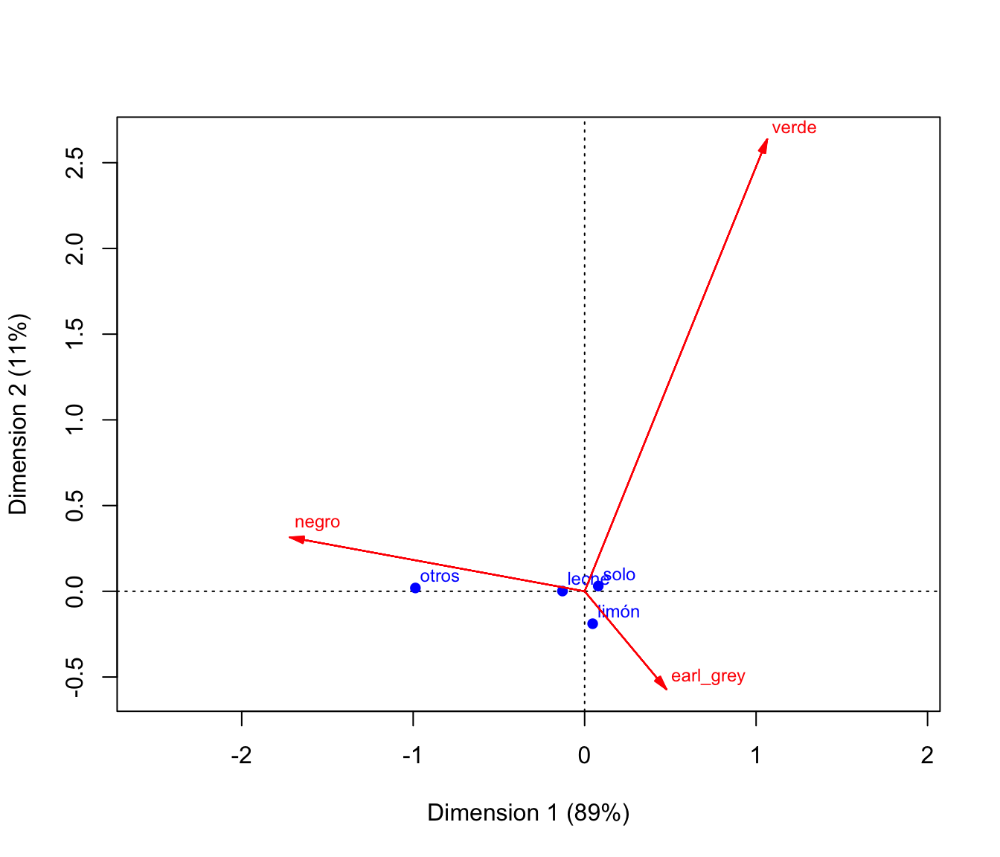
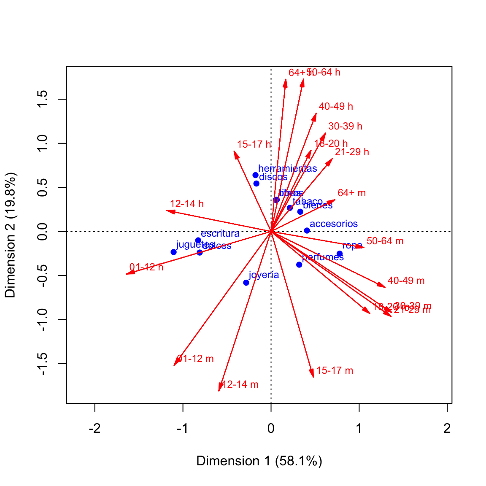
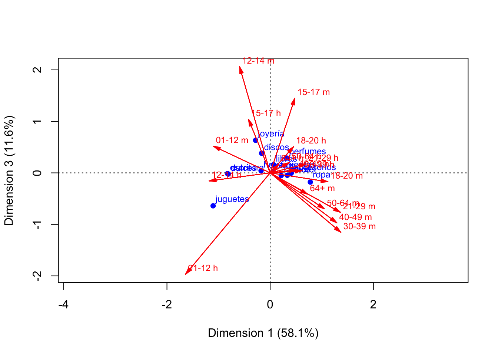

library(tidyverse)
library(lubridate)
library(kableExtra)2 Datos categóricos
En esta sección mostraremos cómo hacer distintos tipos de resúmenes para mediciones individuales. Consideraremos también el uso de estas descripciones para comparar distintos grupos (o bonches de datos, como les llamaba Tukey), aplicando repetidamente los mismos resúmenes a lo largo de esos distintos grupos.
2.1 Datos categóricos y tablas
Una medición categórica es una que toma sus valores posibles en un conjunto que no es numérico. Consideremos los siguiente datos de 300 tomadores de té (Lê, Josse, y Husson (2008)):
# cargamos y traducimos los datos
te_tbl <- read_csv("./datos/tea.csv") |>
mutate(id = row_number()) |>
select(id, Tea, How, sugar, how, price, age) |>
rename(tipo = Tea, complementos = How, azucar = sugar,
presentacion = how, precio = price, edad = age) |>
mutate(tipo = recode(tipo, black = "negro", green = "verde", `Earl Grey` = "earl_grey"),
complementos = recode(complementos, alone = "solo", milk = "leche",
lemon = "limón", .default = "otros"),
azucar = recode(azucar, sugar = "con_azúcar", No.sugar = "sin_azúcar"),
presentacion = recode(presentacion, `tea bag`="bolsa",
unpackaged = "suelto", .default = "mixto"),
precio = recode(precio, p_upscale = "fino", p_branded = "de_marca",
p_private_label = "marca_propia", p_variable = "variable",
.default = "no_sabe"))
sample_n(te_tbl, 10) |> kable()| id | tipo | complementos | azucar | presentacion | precio | edad |
|---|---|---|---|---|---|---|
| 193 | earl_grey | solo | con_azúcar | bolsa | no_sabe | 23 |
| 250 | earl_grey | solo | sin_azúcar | bolsa | de_marca | 31 |
| 240 | earl_grey | leche | sin_azúcar | mixto | fino | 40 |
| 229 | verde | solo | sin_azúcar | suelto | fino | 25 |
| 180 | verde | solo | con_azúcar | mixto | de_marca | 19 |
| 297 | verde | leche | sin_azúcar | mixto | fino | 50 |
| 260 | earl_grey | solo | con_azúcar | mixto | variable | 21 |
| 106 | earl_grey | solo | con_azúcar | bolsa | de_marca | 27 |
| 124 | earl_grey | solo | con_azúcar | bolsa | de_marca | 22 |
| 122 | earl_grey | limón | con_azúcar | mixto | de_marca | 23 |
Mediciones como tipo, presentación o azucar son variables categóricas. Desde el punto de vista univariado, generalmente no es necesario resumir, sino simplemente agrupar y contar cuántas veces ocurre cada categoría. Por ejemplo
tabla_1 <- te_tbl |> count(tipo) |>
arrange(desc(n))
tabla_1 |> kable()| tipo | n |
|---|---|
| earl_grey | 193 |
| negro | 74 |
| verde | 33 |
Usualmente es más útil reportar la porporción o porcentaje de casos por categoría
tabla_2 <- te_tbl |>
count(tipo) |>
mutate(n_total = sum(n), prop = n / n_total) |>
select(tipo, n_total, prop) |>
mutate(across(where(is.numeric), round, 2)) |>
arrange(desc(prop))
tabla_2 |> kable()| tipo | n_total | prop |
|---|---|---|
| earl_grey | 300 | 0.64 |
| negro | 300 | 0.25 |
| verde | 300 | 0.11 |
Podemos hacer varias variables juntas de la siguiente manera:
perfiles_col_tbl <- te_tbl |> select(id, tipo, complementos, presentacion, azucar) |>
pivot_longer(cols = tipo:azucar, names_to = "variable", values_to = "valor") |>
count(variable, valor) |>
group_by(variable) |>
mutate(n_total = sum(n), prop = n / n_total) |>
mutate(prop = round(prop, 2)) |>
arrange(desc(prop), .by_group = TRUE)
perfiles_col_tbl |> kable()| variable | valor | n | n_total | prop |
|---|---|---|---|---|
| azucar | sin_azúcar | 155 | 300 | 0.52 |
| azucar | con_azúcar | 145 | 300 | 0.48 |
| complementos | solo | 195 | 300 | 0.65 |
| complementos | leche | 63 | 300 | 0.21 |
| complementos | limón | 33 | 300 | 0.11 |
| complementos | otros | 9 | 300 | 0.03 |
| presentacion | bolsa | 170 | 300 | 0.57 |
| presentacion | mixto | 94 | 300 | 0.31 |
| presentacion | suelto | 36 | 300 | 0.12 |
| tipo | earl_grey | 193 | 300 | 0.64 |
| tipo | negro | 74 | 300 | 0.25 |
| tipo | verde | 33 | 300 | 0.11 |
Para leer más fácil, imprimimos individualmente estas tablas, o hacemos algo como lo que sigue para mostrarlas todas juntas:
perfiles_col_tbl |>
ungroup() |>
select(-variable, -n_total) |>
kable() |>
pack_rows(index = table(perfiles_col_tbl$variable))| valor | n | prop |
|---|---|---|
| azucar | ||
| sin_azúcar | 155 | 0.52 |
| con_azúcar | 145 | 0.48 |
| complementos | ||
| solo | 195 | 0.65 |
| leche | 63 | 0.21 |
| limón | 33 | 0.11 |
| otros | 9 | 0.03 |
| presentacion | ||
| bolsa | 170 | 0.57 |
| mixto | 94 | 0.31 |
| suelto | 36 | 0.12 |
| tipo | ||
| earl_grey | 193 | 0.64 |
| negro | 74 | 0.25 |
| verde | 33 | 0.11 |
2.2 Comparando grupos con variables categóricas
Este análisis generalmente es más interesante cuando comparamos grupos. Supongamos que nos interesa ver si existe una relación entre usar el tipo de té que toman estas personas y el uso de complementos como leche o limón. Podríamos entonces dividir los datos según el uso de azúcar y repetir para cada grupo las tablas mostradas arriba:
perfiles_col_tbl <- te_tbl |> count(complementos, tipo) |>
group_by(tipo) |>
mutate(prop = n / sum(n)) |>
group_by(complementos) |>
select(-n) |>
pivot_wider(names_from = tipo, values_from = prop, values_fill = 0)
perfiles_col_tbl |> kable(digits = 2, caption = "Perfiles por columna")| complementos | earl_grey | negro | verde |
|---|---|---|---|
| leche | 0.20 | 0.26 | 0.18 |
| limón | 0.12 | 0.09 | 0.06 |
| otros | 0.02 | 0.08 | 0.00 |
| solo | 0.66 | 0.57 | 0.76 |
Comparando los perfiles de las columnas observamos variaciones interesantes: por ejemplo, los tomadores de Earl Grey tienden a usar más limón como complemento que otros grupos. Son resúmenes univariados que ahora comparamos a lo largo de grupos. Podemos hacer las comparaciones más simples si hacemos todas contra una columna marginal del uso general en la muestra de los distintos complementos_
comp_tbl <- te_tbl |> count(complementos) |> mutate(total = n / sum(n))
perfiles_col_tbl <- left_join(perfiles_col_tbl, comp_tbl) |>
arrange(desc(total)) |>
select(-n)Joining, by = "complementos"perfiles_col_tbl |> kable(digits = 2)| complementos | earl_grey | negro | verde | total |
|---|---|---|---|---|
| solo | 0.66 | 0.57 | 0.76 | 0.65 |
| leche | 0.20 | 0.26 | 0.18 | 0.21 |
| limón | 0.12 | 0.09 | 0.06 | 0.11 |
| otros | 0.02 | 0.08 | 0.00 | 0.03 |
En este punto, vemos que hay coincidencias y diferencias entre los grupos de tomadores de té. Podemos expresar esto de manera simple calculando índices contra la columna de total:
res_tbl <- perfiles_col_tbl |>
mutate(across(where(is.numeric), ~ .x / total)) |>
select(-total)
res_tbl |> kable(digits = 2)| complementos | earl_grey | negro | verde |
|---|---|---|---|
| solo | 1.02 | 0.87 | 1.17 |
| leche | 0.94 | 1.22 | 0.87 |
| limón | 1.13 | 0.86 | 0.55 |
| otros | 0.52 | 2.70 | 0.00 |
Valores por encima de 1 indican columnas por arriba de la población general, y análogamente para valores por debajo de uno. Estas cantidades pueden escribirse en términos porcentuales, o se les puede restar 1 para terminar como una variación porcentual del promedio. A estas cantidades se les llama residuales crudos:
res_tbl <- perfiles_col_tbl |>
mutate(across(where(is.numeric) & !total, ~ .x / total - 1))
res_tbl |> kable(digits = 2)| complementos | earl_grey | negro | verde | total |
|---|---|---|---|---|
| solo | 0.02 | -0.13 | 0.17 | 0.65 |
| leche | -0.06 | 0.22 | -0.13 | 0.21 |
| limón | 0.13 | -0.14 | -0.45 | 0.11 |
| otros | -0.48 | 1.70 | -1.00 | 0.03 |
Podemos finalmente marcar la tabla:
res_tbl |> mutate(across(where(is.numeric), round, 2)) |>
mutate(across(where(is.numeric) & ! total,
~ cell_spec(.x, color = ifelse(.x > 0.1, "black",
ifelse(.x < -0.1, "red", "gray"))))) |>
arrange(desc(total)) |>
kable(escape = FALSE) | complementos | earl_grey | negro | verde | total |
|---|---|---|---|---|
| solo | 0.02 | -0.13 | 0.17 | 0.65 |
| leche | -0.06 | 0.22 | -0.13 | 0.21 |
| limón | 0.13 | -0.14 | -0.45 | 0.11 |
| otros | -0.48 | 1.7 | -1 | 0.03 |
Prefiles
A este tipo de análisis de tablas cruzadas a veces se le llama análisis de perfiles columna. Nos permite entender cómo varía la distribución de la variable de los renglones según el grupo indicado por la columna. - Desviaciones grandes en los residuales indican asociaciones fuertes entre la variable de los reglones y de las columnas - Recordemos que este análisis aplica a la muestra de datos que tenemos. Columnas con pocos individuos tienden a mostrar más variación y debemos ser cuidadosos al generalizar.
Podemos incluir también totales para ayudarnos a juzgar las variaciones:
| complementos | earl_grey | negro | verde | total |
|---|---|---|---|---|
| 193 | 74 | 33 | 1.00 | |
| solo | 0.02 | -0.13 | 0.17 | 0.65 |
| leche | -0.06 | 0.22 | -0.13 | 0.21 |
| limón | 0.13 | -0.14 | -0.45 | 0.11 |
| otros | -0.48 | 1.7 | -1 | 0.03 |
2.3 Observación: perfiles renglón y columna
El análisis también lo podemos hacer con los perfiles de los renglones. Los residuales crudos que usamos para interpretar son los mismos. La razón es la siguiente:
Para los perfiles columna, si escribimos \(n_{+j}\) como los totales por columna, y \(n_{i+}\) los totales por renglón, tenemos que los perfiles columna son: \[c_{i,j} = \frac{n_{i,j}}{n_{+j}}\] Escribimos también \(c_i = \frac{n_{i+}}{n}\) y \(r_j = \frac{n_{+j}}{n}\) como los porcentajes marginales por columna y por renglón respectivamente.
Los residuales son entonces \[r_{i,j} = \frac{\frac{n_{i,j}}{n_{+,j}}} { \frac{n_{i,+}}{n}} - 1 = \frac{p_{i,j} - r_ic_j}{r_ic_j}\] Nótese que no importa entonces cómo comencemos el cálculo, por renglones o por columnas, el resultado es el mismo.
- Discute qué sentido tiene comparar \(p_{i,j}\) contra \(r_ic_j\). ¿Qué interpretación tiene esta última cantidad?
En algunos casos se utilizan residuales estandarizados para hacer el análisis, que están dados por \[ \frac{p_{i,j} - r_ic_j}{\sqrt{r_ic_j}}\] Veremos más adelante cuál es la razón de esto: tiene que ver con inferencia y variabilidad muestral de perfiles y residuales, aunque el análisis básico que presentamos arriba generalmente es suficiente para extraer de manera clara patrones importantes en los datos.
2.4 Visualización de tablas cruzadas
Para tablas más grandes, muchas veces las técnicas que mostramos arriba no son suficientes para entender y presentar patrones importantes en los datos. En estos casos, buscamos reducir la dimensionalidad de los datos para poder presentarlos en una gráfica de dos dimensiones.
Podemos utilizar análisis de correspondencias. A grandes rasgos (ver (Izenman 2009) para los detalles) buscamos una representación tal que:
- Cada categoría de las columnas está representada por una flecha que sale del origen de nuestra gráfica
- Cada categoría de los renglones está representada por un punto en nuestra gráfica
- Si proyectamos los puntos (renglones) sobre las direcciones de las columnas, entonces el tamaño de la proyección es lo más cercano posible a el residual correspondiente de las tablas del análisis mostrado arriba.
Para construir esta gráfica, entonces, existe un proceso de optimización que busca representar lo más fielmente los residuales del análisis mostrado arriba en dos dimensiones, y de esta forma buscamos recuperar una buena parte de la información de los residuales de una manera más compacta.
2.5 Ejemplo: tés y complementos
library(ca)
corr_te <- ca(table(te_tbl$complementos, te_tbl$tipo))
plot(corr_te, map = "rowgreen", arrows = c(FALSE, TRUE))
La contribución de cada dimensión a la aproximación se indica en los ejes. Como vemos en la gráfica, y la suma de las contribuciones nos da la calidad de la representación, que en este caso es perfecta.
Tip
- El análisis de correspondencias es un tema relativamente avanzado de estadística multivariada, y su definición precisa requiere de matemáticas más avanzadas (por ejemplo la descomposición en valores singulares).
- Cualquier hallazgo obtenido en este tipo de análisis debe ser verificado en las tablas correspondientes de perfiles
- Hay distintos tipos de gráficas (biplots) asociadas al análisis de correspondencias, que privilegian representar mejor a distintos tipos de características de los datos
2.6 Ejemplo: robo en tiendas
Consideramos los siguientes datos de robos en tiendas en Holanda por personas de distintas edades y genéros (Izenman (2009)). En este caso, las variables ya están cruzadas:
hurto_tbl <- read_csv("./datos/hurto.csv") |>
mutate(grupo = ifelse(grupo == "-12 h", "01-12 h", grupo),
grupo = ifelse(grupo == "-12 m", "01-12 m", grupo))Rows: 18 Columns: 14
── Column specification ────────────────────────────────────────────────────────
Delimiter: ","
chr (1): grupo
dbl (13): ropa, accesorios, tabaco, escritura, libros, discos, bienes, dulce...
ℹ Use `spec()` to retrieve the full column specification for this data.
ℹ Specify the column types or set `show_col_types = FALSE` to quiet this message.hurto_tbl |> kable()| grupo | ropa | accesorios | tabaco | escritura | libros | discos | bienes | dulces | juguetes | joyería | perfumes | herramientas | otros |
|---|---|---|---|---|---|---|---|---|---|---|---|---|---|
| 01-12 h | 81 | 66 | 150 | 667 | 67 | 24 | 47 | 430 | 743 | 132 | 32 | 197 | 209 |
| 12-14 h | 138 | 204 | 340 | 1409 | 259 | 272 | 117 | 637 | 684 | 408 | 57 | 547 | 550 |
| 15-17 h | 304 | 193 | 229 | 527 | 258 | 368 | 98 | 246 | 116 | 298 | 61 | 402 | 454 |
| 18-20 h | 384 | 149 | 151 | 84 | 146 | 141 | 61 | 40 | 13 | 71 | 52 | 138 | 252 |
| 21-29 h | 942 | 297 | 313 | 92 | 251 | 167 | 193 | 30 | 16 | 130 | 111 | 280 | 624 |
| 30-39 h | 359 | 109 | 136 | 36 | 96 | 67 | 75 | 11 | 16 | 31 | 54 | 200 | 195 |
| 40-49 h | 178 | 53 | 121 | 36 | 48 | 29 | 50 | 5 | 6 | 14 | 41 | 152 | 88 |
| 50-64 h | 137 | 68 | 171 | 37 | 56 | 27 | 55 | 17 | 3 | 11 | 50 | 211 | 90 |
| 64+ h | 45 | 28 | 145 | 17 | 41 | 7 | 29 | 28 | 8 | 10 | 28 | 111 | 34 |
| 01-12 m | 71 | 19 | 59 | 224 | 19 | 7 | 22 | 137 | 113 | 162 | 70 | 15 | 24 |
| 12-14 m | 241 | 98 | 111 | 346 | 60 | 32 | 29 | 240 | 98 | 548 | 178 | 29 | 58 |
| 15-17 m | 477 | 114 | 58 | 91 | 50 | 27 | 41 | 80 | 14 | 303 | 141 | 9 | 72 |
| 18-20 m | 436 | 108 | 76 | 18 | 32 | 12 | 32 | 12 | 10 | 74 | 70 | 14 | 67 |
| 21-29 m | 1180 | 207 | 132 | 30 | 61 | 21 | 65 | 16 | 12 | 100 | 104 | 30 | 157 |
| 30-39 m | 1009 | 165 | 121 | 27 | 43 | 9 | 74 | 14 | 31 | 48 | 81 | 36 | 107 |
| 40-49 m | 517 | 102 | 93 | 23 | 31 | 7 | 51 | 10 | 8 | 22 | 46 | 24 | 66 |
| 50-64 m | 488 | 127 | 214 | 27 | 57 | 13 | 79 | 23 | 17 | 26 | 69 | 35 | 64 |
| 64+ m | 173 | 64 | 215 | 13 | 44 | 0 | 39 | 42 | 6 | 12 | 41 | 11 | 55 |
Esta tabla es más grande y difícil de entender tal cual está. Comenzamos por examinar las marginales:
hurto_tbl |>
pivot_longer(cols = ropa:otros, names_to = "producto", values_to = "n") |>
group_by(producto) |>
summarise(n = sum(n)) |>
mutate(prop = n / sum(n)) |>
arrange(desc(prop)) |>
kable(digits = 2)| producto | n | prop |
|---|---|---|
| ropa | 7160 | 0.22 |
| escritura | 3704 | 0.11 |
| otros | 3166 | 0.10 |
| tabaco | 2835 | 0.09 |
| herramientas | 2441 | 0.07 |
| joyería | 2400 | 0.07 |
| accesorios | 2171 | 0.07 |
| dulces | 2018 | 0.06 |
| juguetes | 1914 | 0.06 |
| libros | 1619 | 0.05 |
| perfumes | 1286 | 0.04 |
| discos | 1230 | 0.04 |
| bienes | 1157 | 0.03 |
grupos_tbl <- hurto_tbl |>
pivot_longer(cols = ropa:otros, names_to = "producto", values_to = "n") |>
group_by(grupo) |>
summarise(n = sum(n)) |>
mutate(prop = n / sum(n)) |>
arrange(desc(prop))
grupos_tbl |> kable(digits = 2)| grupo | n | prop |
|---|---|---|
| 12-14 h | 5622 | 0.17 |
| 15-17 h | 3554 | 0.11 |
| 21-29 h | 3446 | 0.10 |
| 01-12 h | 2845 | 0.09 |
| 21-29 m | 2115 | 0.06 |
| 12-14 m | 2068 | 0.06 |
| 30-39 m | 1765 | 0.05 |
| 18-20 h | 1682 | 0.05 |
| 15-17 m | 1477 | 0.04 |
| 30-39 h | 1385 | 0.04 |
| 50-64 m | 1239 | 0.04 |
| 40-49 m | 1000 | 0.03 |
| 18-20 m | 961 | 0.03 |
| 01-12 m | 942 | 0.03 |
| 50-64 h | 933 | 0.03 |
| 40-49 h | 821 | 0.02 |
| 64+ m | 715 | 0.02 |
| 64+ h | 531 | 0.02 |
Intentamos análisis de correspondencias para comparar los perfiles columna:
hurto_df <- as.data.frame(hurto_tbl)
rownames(hurto_df) <- hurto_tbl$grupo
hurto_df$grupo <- NULL
corr_hurto <- ca(hurto_df)
grafica_datos <- plot(corr_hurto, map = "rowgreen", arrows = c(FALSE, TRUE))
- Según esta gráfica, ¿qué categorias de productos están sobrerrepresentadas en cada grupo de edad? ¿Cómo tendrían que verse el análisis de perfiles columna?
Como se aprecia, en la siguiente tabla, es difícil entender los patrones generales en los datos. Quitamos algunas columnas para imprimir más fácilmente
perfiles_hurto_tbl <- hurto_tbl |>
pivot_longer(cols = ropa:otros, names_to = "producto", values_to = "n") |>
group_by(producto) |>
mutate(prop = n / sum(n)) |>
select(-n) |>
pivot_wider(names_from = producto, values_from = prop)
perfiles_hurto_tbl |>
select(-bienes, -discos, -perfumes) |>
kable(digits = 2) |>
kable_styling(font_size = 10)| grupo | ropa | accesorios | tabaco | escritura | libros | dulces | juguetes | joyería | herramientas | otros |
|---|---|---|---|---|---|---|---|---|---|---|
| 01-12 h | 0.01 | 0.03 | 0.05 | 0.18 | 0.04 | 0.21 | 0.39 | 0.06 | 0.08 | 0.07 |
| 12-14 h | 0.02 | 0.09 | 0.12 | 0.38 | 0.16 | 0.32 | 0.36 | 0.17 | 0.22 | 0.17 |
| 15-17 h | 0.04 | 0.09 | 0.08 | 0.14 | 0.16 | 0.12 | 0.06 | 0.12 | 0.16 | 0.14 |
| 18-20 h | 0.05 | 0.07 | 0.05 | 0.02 | 0.09 | 0.02 | 0.01 | 0.03 | 0.06 | 0.08 |
| 21-29 h | 0.13 | 0.14 | 0.11 | 0.02 | 0.16 | 0.01 | 0.01 | 0.05 | 0.11 | 0.20 |
| 30-39 h | 0.05 | 0.05 | 0.05 | 0.01 | 0.06 | 0.01 | 0.01 | 0.01 | 0.08 | 0.06 |
| 40-49 h | 0.02 | 0.02 | 0.04 | 0.01 | 0.03 | 0.00 | 0.00 | 0.01 | 0.06 | 0.03 |
| 50-64 h | 0.02 | 0.03 | 0.06 | 0.01 | 0.03 | 0.01 | 0.00 | 0.00 | 0.09 | 0.03 |
| 64+ h | 0.01 | 0.01 | 0.05 | 0.00 | 0.03 | 0.01 | 0.00 | 0.00 | 0.05 | 0.01 |
| 01-12 m | 0.01 | 0.01 | 0.02 | 0.06 | 0.01 | 0.07 | 0.06 | 0.07 | 0.01 | 0.01 |
| 12-14 m | 0.03 | 0.05 | 0.04 | 0.09 | 0.04 | 0.12 | 0.05 | 0.23 | 0.01 | 0.02 |
| 15-17 m | 0.07 | 0.05 | 0.02 | 0.02 | 0.03 | 0.04 | 0.01 | 0.13 | 0.00 | 0.02 |
| 18-20 m | 0.06 | 0.05 | 0.03 | 0.00 | 0.02 | 0.01 | 0.01 | 0.03 | 0.01 | 0.02 |
| 21-29 m | 0.16 | 0.10 | 0.05 | 0.01 | 0.04 | 0.01 | 0.01 | 0.04 | 0.01 | 0.05 |
| 30-39 m | 0.14 | 0.08 | 0.04 | 0.01 | 0.03 | 0.01 | 0.02 | 0.02 | 0.01 | 0.03 |
| 40-49 m | 0.07 | 0.05 | 0.03 | 0.01 | 0.02 | 0.00 | 0.00 | 0.01 | 0.01 | 0.02 |
| 50-64 m | 0.07 | 0.06 | 0.08 | 0.01 | 0.04 | 0.01 | 0.01 | 0.01 | 0.01 | 0.02 |
| 64+ m | 0.02 | 0.03 | 0.08 | 0.00 | 0.03 | 0.02 | 0.00 | 0.00 | 0.00 | 0.02 |
res_hurto_tbl <- left_join(perfiles_hurto_tbl, grupos_tbl |> rename(total = prop)) |>
select(-n) |>
select(-bienes, -discos, -perfumes) |>
mutate(across(where(is.numeric) & !total, ~ .x / total - 1)) |>
mutate(across(where(is.numeric), round, 2)) Joining, by = "grupo"res_hurto_tbl |>
mutate(across(where(is.numeric) & ! total,
~ cell_spec(.x, color = ifelse(.x > 0.2, "black",
ifelse(.x < -0.2, "red", "gray"))))) |>
select(-total) |>
kable(escape = FALSE) |>
kable_styling(font_size = 10)| grupo | ropa | accesorios | tabaco | escritura | libros | dulces | juguetes | joyería | herramientas | otros |
|---|---|---|---|---|---|---|---|---|---|---|
| 01-12 h | -0.87 | -0.65 | -0.38 | 1.1 | -0.52 | 1.48 | 3.52 | -0.36 | -0.06 | -0.23 |
| 12-14 h | -0.89 | -0.45 | -0.29 | 1.24 | -0.06 | 0.86 | 1.1 | 0 | 0.32 | 0.02 |
| 15-17 h | -0.6 | -0.17 | -0.25 | 0.33 | 0.48 | 0.14 | -0.44 | 0.16 | 0.53 | 0.34 |
| 18-20 h | 0.06 | 0.35 | 0.05 | -0.55 | 0.77 | -0.61 | -0.87 | -0.42 | 0.11 | 0.57 |
| 21-29 h | 0.26 | 0.31 | 0.06 | -0.76 | 0.49 | -0.86 | -0.92 | -0.48 | 0.1 | 0.89 |
| 30-39 h | 0.2 | 0.2 | 0.15 | -0.77 | 0.42 | -0.87 | -0.8 | -0.69 | 0.96 | 0.47 |
| 40-49 h | 0 | -0.02 | 0.72 | -0.61 | 0.2 | -0.9 | -0.87 | -0.76 | 1.51 | 0.12 |
| 50-64 h | -0.32 | 0.11 | 1.14 | -0.65 | 0.23 | -0.7 | -0.94 | -0.84 | 2.07 | 0.01 |
| 64+ h | -0.61 | -0.2 | 2.19 | -0.71 | 0.58 | -0.14 | -0.74 | -0.74 | 1.83 | -0.33 |
| 01-12 m | -0.65 | -0.69 | -0.27 | 1.13 | -0.59 | 1.39 | 1.07 | 1.37 | -0.78 | -0.73 |
| 12-14 m | -0.46 | -0.28 | -0.37 | 0.5 | -0.41 | 0.9 | -0.18 | 2.65 | -0.81 | -0.71 |
| 15-17 m | 0.49 | 0.18 | -0.54 | -0.45 | -0.31 | -0.11 | -0.84 | 1.83 | -0.92 | -0.49 |
| 18-20 m | 1.1 | 0.71 | -0.08 | -0.83 | -0.32 | -0.8 | -0.82 | 0.06 | -0.8 | -0.27 |
| 21-29 m | 1.58 | 0.49 | -0.27 | -0.87 | -0.41 | -0.88 | -0.9 | -0.35 | -0.81 | -0.22 |
| 30-39 m | 1.64 | 0.43 | -0.2 | -0.86 | -0.5 | -0.87 | -0.7 | -0.62 | -0.72 | -0.37 |
| 40-49 m | 1.39 | 0.56 | 0.09 | -0.79 | -0.37 | -0.84 | -0.86 | -0.7 | -0.67 | -0.31 |
| 50-64 m | 0.82 | 0.56 | 1.02 | -0.81 | -0.06 | -0.7 | -0.76 | -0.71 | -0.62 | -0.46 |
| 64+ m | 0.12 | 0.36 | 2.51 | -0.84 | 0.26 | -0.04 | -0.85 | -0.77 | -0.79 | -0.2 |
- Compara tus conclusiones del mapa de correspondencias con esta información de los residuales
Nota adicionalmente que el ordenamiento de las categorías en la primera dimensión del mapa de correspondencias ayuda a interpretar:
res_hurto_tbl |> select("grupo", "escritura", "juguetes", "dulces", "joyería",
"herramientas", "otros", "libros", "tabaco", "accesorios",
"ropa") |>
mutate(across(where(is.numeric),
~ cell_spec(.x, color = ifelse(.x > 0.2, "black",
ifelse(.x < -0.2, "red", "gray"))))) |>
kable(escape = FALSE) |>
kable_styling(font_size = 10)| grupo | escritura | juguetes | dulces | joyería | herramientas | otros | libros | tabaco | accesorios | ropa |
|---|---|---|---|---|---|---|---|---|---|---|
| 01-12 h | 1.1 | 3.52 | 1.48 | -0.36 | -0.06 | -0.23 | -0.52 | -0.38 | -0.65 | -0.87 |
| 12-14 h | 1.24 | 1.1 | 0.86 | 0 | 0.32 | 0.02 | -0.06 | -0.29 | -0.45 | -0.89 |
| 15-17 h | 0.33 | -0.44 | 0.14 | 0.16 | 0.53 | 0.34 | 0.48 | -0.25 | -0.17 | -0.6 |
| 18-20 h | -0.55 | -0.87 | -0.61 | -0.42 | 0.11 | 0.57 | 0.77 | 0.05 | 0.35 | 0.06 |
| 21-29 h | -0.76 | -0.92 | -0.86 | -0.48 | 0.1 | 0.89 | 0.49 | 0.06 | 0.31 | 0.26 |
| 30-39 h | -0.77 | -0.8 | -0.87 | -0.69 | 0.96 | 0.47 | 0.42 | 0.15 | 0.2 | 0.2 |
| 40-49 h | -0.61 | -0.87 | -0.9 | -0.76 | 1.51 | 0.12 | 0.2 | 0.72 | -0.02 | 0 |
| 50-64 h | -0.65 | -0.94 | -0.7 | -0.84 | 2.07 | 0.01 | 0.23 | 1.14 | 0.11 | -0.32 |
| 64+ h | -0.71 | -0.74 | -0.14 | -0.74 | 1.83 | -0.33 | 0.58 | 2.19 | -0.2 | -0.61 |
| 01-12 m | 1.13 | 1.07 | 1.39 | 1.37 | -0.78 | -0.73 | -0.59 | -0.27 | -0.69 | -0.65 |
| 12-14 m | 0.5 | -0.18 | 0.9 | 2.65 | -0.81 | -0.71 | -0.41 | -0.37 | -0.28 | -0.46 |
| 15-17 m | -0.45 | -0.84 | -0.11 | 1.83 | -0.92 | -0.49 | -0.31 | -0.54 | 0.18 | 0.49 |
| 18-20 m | -0.83 | -0.82 | -0.8 | 0.06 | -0.8 | -0.27 | -0.32 | -0.08 | 0.71 | 1.1 |
| 21-29 m | -0.87 | -0.9 | -0.88 | -0.35 | -0.81 | -0.22 | -0.41 | -0.27 | 0.49 | 1.58 |
| 30-39 m | -0.86 | -0.7 | -0.87 | -0.62 | -0.72 | -0.37 | -0.5 | -0.2 | 0.43 | 1.64 |
| 40-49 m | -0.79 | -0.86 | -0.84 | -0.7 | -0.67 | -0.31 | -0.37 | 0.09 | 0.56 | 1.39 |
| 50-64 m | -0.81 | -0.76 | -0.7 | -0.71 | -0.62 | -0.46 | -0.06 | 1.02 | 0.56 | 0.82 |
| 64+ m | -0.84 | -0.85 | -0.04 | -0.77 | -0.79 | -0.2 | 0.26 | 2.51 | 0.36 | 0.12 |
Otras dimensiones
En el caso anterior, la calidad de la representación es cercana al 80%. Existen algunas desviaciones que la posiblemente la gŕafica no explica del todo, y algunas proyecciones son aproximadas. Podemos ver cómo se ven otras dimensiones de este análisis para entender desviaciones adicionales:
plot(corr_hurto, dim = c(1, 3), map = "rowgreen", arrows = c(FALSE, TRUE))
Izenman, A. J. 2009. Modern Multivariate Statistical Techniques: Regression, Classification, and Manifold Learning. Springer Texts en Statistics. Springer New York. https://books.google.com.mx/books?id=1CuznRORa3EC.
Lê, Sébastien, Julie Josse, y François Husson. 2008. «FactoMineR: An R Package for Multivariate Analysis». Journal of Statistical Software, Articles 25 (1): 1-18. https://doi.org/10.18637/jss.v025.i01.